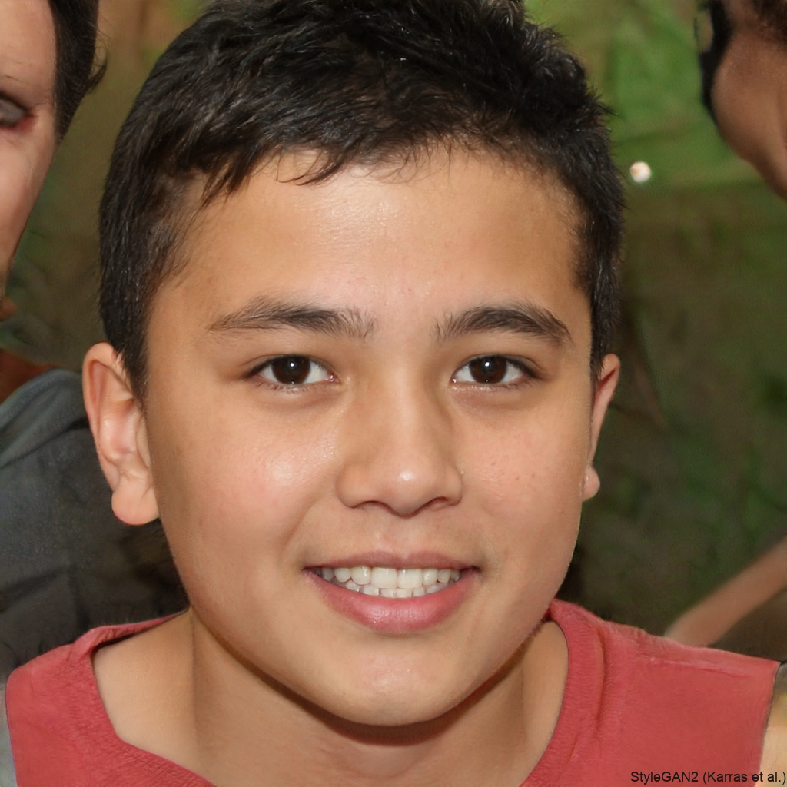

Program Background
The current business climate has seen an unprecedented number of cybersecurity-related headlines. The New York CISO of the Year Award recognizes outstanding CISOs for their contributions to cybersecurity leadership. This program is overseen by leading industry professionals to celebrate individuals who excel in protecting organizations from cyber threats.
Previous Winners
2023 Darin Hurd
Enterprise CISO, Guaranteed Rate
2023 Neil Witek
Midcap CISO, Oak Street Health

2022 Mahmood Khan
Enterprise SVP & CISO, CNA Insurance
2022 Amanda Leffman
Midcap CISO, Chicago Trading